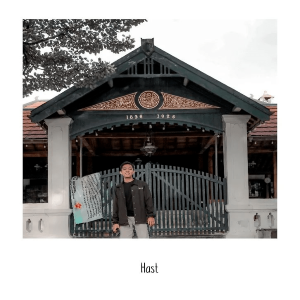

Email: hafidhsyahputra99@gmail.com
Membangun kerangka kerja (framework) otomatisasi pengujian API menggunakan Playwright untuk memvalidasi respons, status code, dan struktur data dari endpoint secara efisien.
Merancang dan mengeksekusi kerangka kerja pengujian End-to-End (E2E) otomatis menggunakan Selenium WebDriver dan JavaScript. Mengimplementasikan pendekatan Page Object Model (POM) untuk memvalidasi fungsionalitas UI pada situs e-commerce Demoblaze.
Merancang dan mengeksekusi skenario pengujian otomatis untuk antarmuka pengguna (UI) pada situs Demoblaze menggunakan Katalon Studio guna memastikan fitur-fitur kritikal berjalan dengan baik.
Mengembangkan skenario pengujian otomatis End-to-End (E2E) menggunakan Cypress untuk memvalidasi alur pengguna (user flow) dan memastikan keandalan aplikasi web.
Merancang dan mengeksekusi skenario pengujian kinerja (Performance & Load Testing) menggunakan K6. Menguji endpoint Demoblaze untuk mengukur metrik keandalan sistem seperti waktu respons, tingkat kegagalan (error rate), dan batas kapasitas server saat menangani ribuan pengguna serentak (Virtual Users).
Yogyakarta
+62 89 667 887 044
hafidhsyahputra99@gmail.com